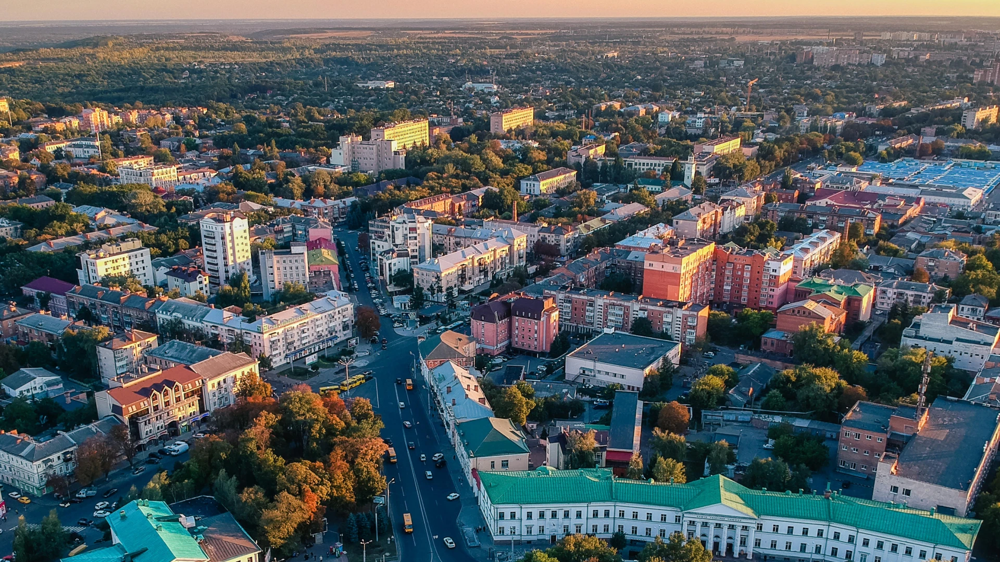
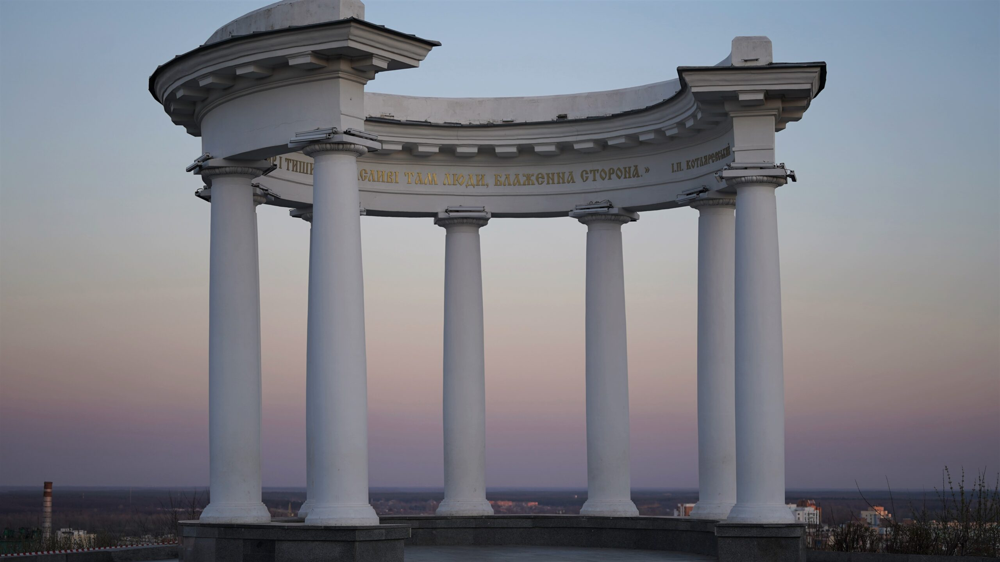
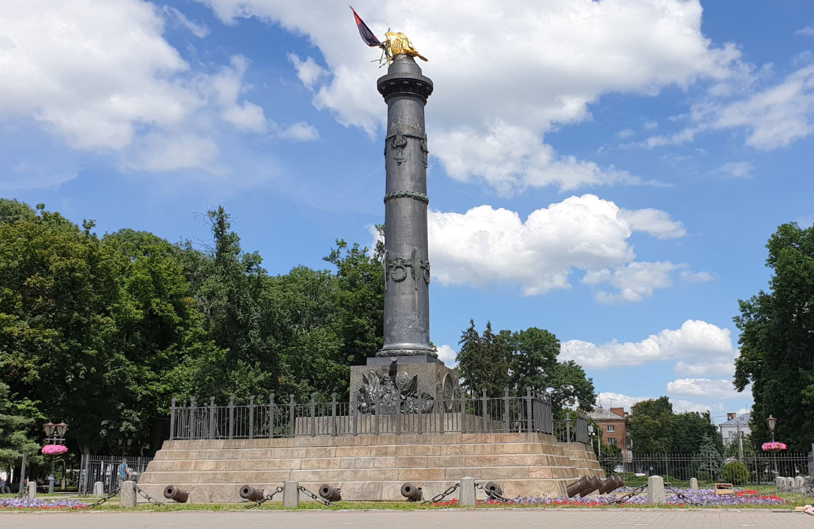

Моя Батьківщина - Полтава
Полтава — одне з найстаріших міст України, відоме своєю багатою історією та культурною спадщиною.
Місто має особливе значення завдяки своїм численним архітектурним пам'яткам та мальовничим краєвидам.
Полтава також є місцем важливих історичних подій, таких як Полтавська битва. Тут можна відвідати
унікальні музеї, красиві парки та пам'ятки, які роблять це місто особливим для кожного мешканця і туриста.

Краєвид Полтави — мальовнича природа

Біла Альтанка — символ Полтави

Пам'ятник Слави — історична пам'ятка